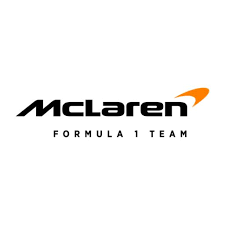

Mercedes

Mercedes-AMG Petronas Formula One Team has been one of the most dominant forces in modern Formula 1,
setting
new standards in performance, consistency, and innovation. Known for their era of supremacy in the
hybrid
engine period, the team combined cutting-edge engineering with exceptional driver talent to secure
multiple
consecutive championships. With a legacy built on precision, discipline, and relentless development,
Mercedes continues to push the boundaries of technology while remaining a constant contender at the
front of
the grid.
McLaren

McLaren Racing is a team synonymous with innovation and resilience, boasting a rich history of success
and
legendary partnerships. From dominating eras in the past to rebuilding in the modern grid, McLaren has
consistently evolved with the sport. Known for nurturing exceptional drivers and embracing bold
engineering
solutions, the team combines heritage with a forward-looking mindset. With a renewed competitive spirit,
McLaren is once again challenging at the front and inspiring a new generation of fans.
Ferrari

Scuderia Ferrari is the oldest and most iconic team in Formula 1 history, representing passion,
heritage,
and racing excellence. With a global fanbase known as the “Tifosi,” Ferrari carries a legacy of
legendary
drivers, historic victories, and emotional rivalries. The team’s signature red cars symbolize speed and
tradition, and despite facing fierce competition in recent years, Ferrari remains a powerful force
driven by
pride, innovation, and the pursuit of championship glory.